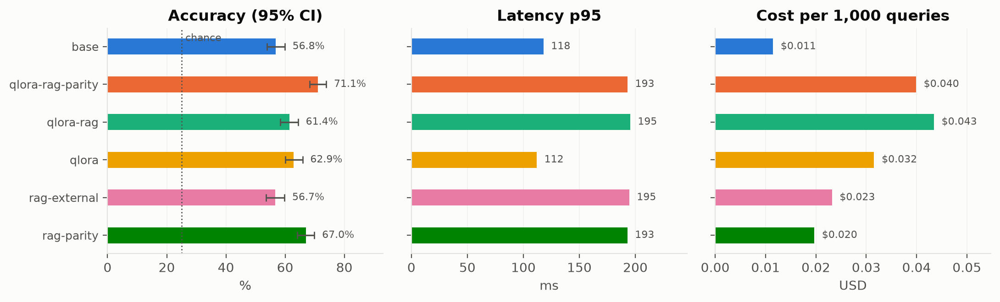
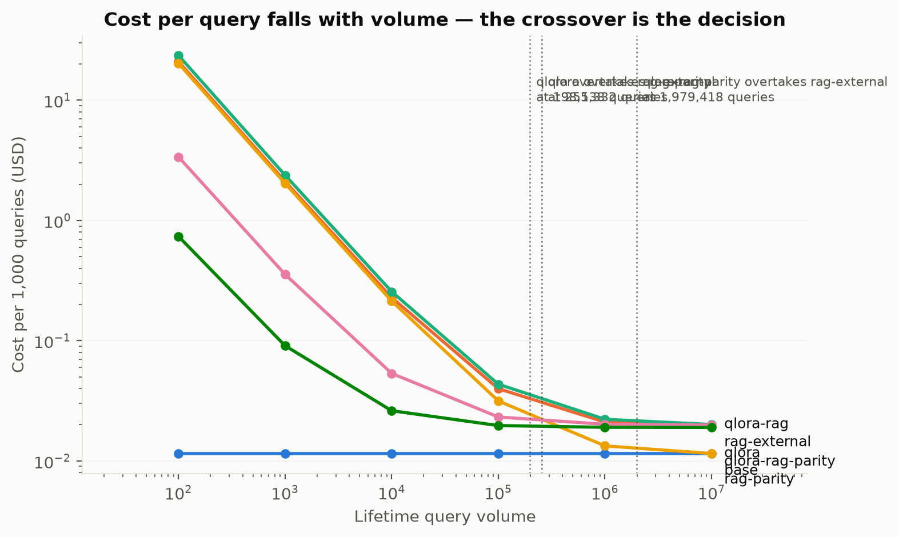

Fine-Tune vs. Retrieve
Retrieval beat fine-tuning on identical information — and the same retrieval over a different corpus was worth nothing.
A controlled six-arm benchmark in clinical multiple-choice QA. One base model, one frozen 1,000-item test set, one prompt, one GPU.
The three findings
1. On identical information, the index beat the weights.
rag-parity retrieves the same MedMCQA explanations the fine-tune trained on —
same base model, same prompt, same facts. Retrieval gained +10.2 points, fine-tuning +6.1,
and the gap between them is significant (p = 0.016).
2. Retrieval over the wrong corpus was worth nothing.
rag-external reads 1.6M chunks of peer-reviewed literature and scores
+0.001 against base (p = 1.000) — a true null, not an
underpowered one. Yet its retrieval works: it surfaces the gold answer in 45.4% of
items. Lexical presence of an answer is not usable evidence.
The corpus mattered more than the technique.
3. Fine-tuning repays its training cost at ~200,000 queries. A merged adapter has identical inference cost to the base, so its advantage is purely prompt length: 113 tokens versus 738.
Minimum detectable effect at n=1,000 is 6.3 points. Comparisons use paired McNemar over identical items.


Browse the benchmark
60 items, stratified by which approach got them right rather than sampled
at random — a random draw is mostly items where every arm agrees, which shows nothing. Start
with index_only and weights_only: those are the cases the whole
benchmark exists to separate.
Cost
Cost per query is meaningless without a volume assumption, so it is swept rather than
asserted. Each arm costs fixed_cost / volume + marginal_cost: fine-tuning is a
large one-off with cheap short-prompt inference, retrieval is nearly free up front but
inflates prefill tokens on every query, forever. The crossover is the
deliverable.
How the arms are kept comparable
Asserted in tests in the source repository, not promised in prose:
- One
from_pretrainedin the codebase; arms share the same model object. - One prompt builder — stripping a RAG prompt's context must reproduce the non-RAG prompt byte for byte, and the training prompt is built by the same function.
- Constrained A/B/C/D log-prob scoring, never free generation — otherwise fine-tuned arms gain from learned formatting rather than knowledge.
- Shared 3,000-character context budget across RAG arms, so corpus quality is not confounded with context length.
- Indices built from train-side text only, gated on content hash.
- Pinned model revisions, fixed batch size, one frozen SHA-256-committed test set.
Honest limitations
- Single seed. All results are seed 42. Headline comparisons are paired within-seed — the stronger test — but training-seed variance is unmeasured.
- Contamination is present but measured. ~9% of test stems are reproduced verbatim above a shuffled-reference chance baseline. But shuffling the answer options changes the base model's score by only −1.6 points, so it is not relying on memorised labels, and contamination is roughly constant across arms — the between-arm comparisons are largely unaffected. The fine-tune did pick up mild positional sensitivity (+3.2) the base model lacks.
- 31.3% of the evaluation pool is dentistry, the subject where retrieval helps least.
- The two indices differ 7.3× in size, so parity-vs-external conflates corpus content with corpus size.
- No free-text evaluation. All results are 4-option MCQ.
- This demo shows no retrieved passages. The committed run JSONs store predictions and token counts, not the retrieved text; showing it would mean re-running retrieval.